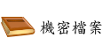

請選擇下方按鈕
window.close()
history.back()
window.external.AddFavorite('要加入的網址', document.title)
陳老師教學網站 a href="javascript:window.location.href='http://gjun.tw';"
 onMouseOver="document.name.src='xxx.gif'" onMouseDown="document.name.src='xxx.gif'" onMouseOut="document.name.src='xxx.gif'">